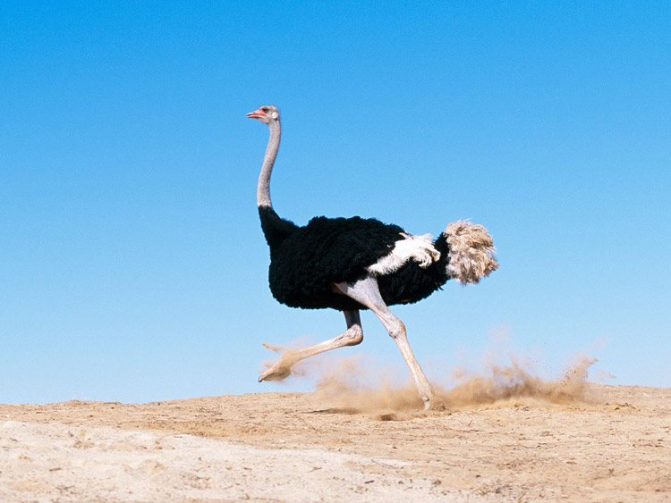
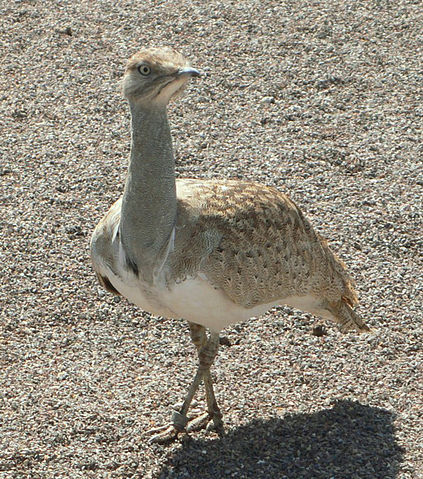
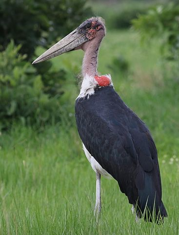
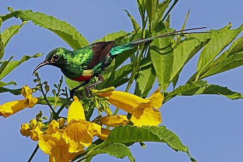

Птахи Африки
Ще більше різноманітними є й птахи Африки. На континенті близько 725 видів птахів.
Тут мешкає найбільший та найшвидший птах(у русі по землі) - страус, нектарниці (одні з найменших), грифи, ткачики, білі чаплі, рожеві фламінго, марабу, птах-секретар, цесарки, турачі та інші.



